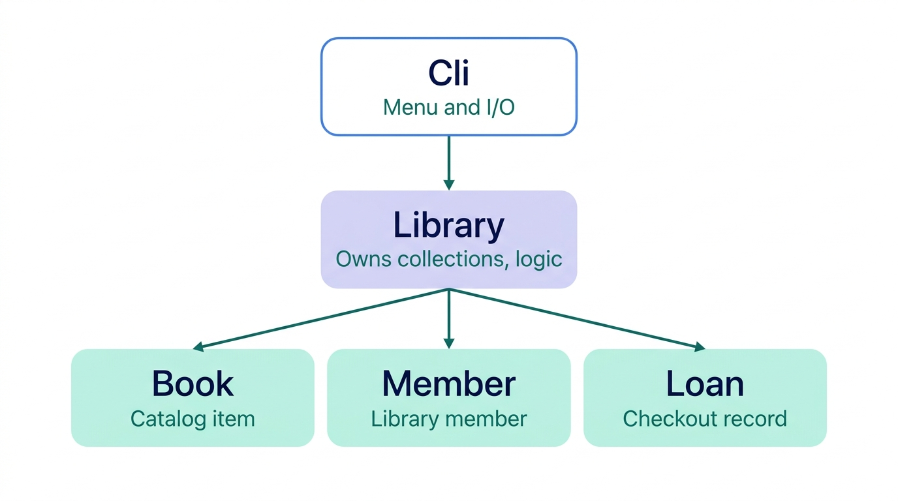

Library Management System
CSCE 606 · Project 1
Jason Atkins & Sugam Mishra
The Application
End-Users
- Librarians and library staff managing small collections
- Anyone running a personal or informal lending library
The Problem
- Paper logs and spreadsheets make it easy to lose track of books, due dates, and overdues
- No easy way to search a growing collection or see everything checked out at a glance
Our Solution
A terminal-based library management system with persistent YAML storage.
Core Features
- Add a Book with auto-generated IDs
- Add a Member to register borrowers
- Checkout a book to a member with a 14-day due date
- Return a book, preserving loan history
- Search by title or author with case-insensitive partial matching
- List Checked-Out to view all active loans and flag overdues
System Design

Design Choices
- Separation of Cli and Library. Library holds business logic and never prints. Cli owns all I/O. Enables unit testing with fake input/output.
- Errors as Exceptions. Library raises
ArgumentError and Cli catches in one place, keeping validation centralized.
- YAML Persistence + Seed Fallback. Simple, human-readable format. Missing save file falls back to seed data so app works on first run.
- Preserved Loan History. Loans marked
returned with a date instead of deleted so history is never lost.
UI Design
==== Library Manager ====
1. Add a book
2. Add a member
3. Check out a book
4. Check in (return) a book
5. Search catalog
6. List checked-out books
7. Exit
Select an option: 3
Book ID: 101
Member ID: 5
Checked out to member 5, due 2026-10-11
UI Design Choices
- Numbered Menu (1 to 7). Lower learning curve than typed commands and nothing to memorize.
- 3-Attempt Retry Loop. Validates input up to 3 times before returning to menu. Prevents blank-input bugs and crashes.
- Confirmation Messages. Every action prints explicit feedback so the user always knows what happened.
Use of AI Tools
Tool. Claude (Anthropic), chat interface
Used For
- Environment setup & troubleshooting (Xcode, Ruby install)
- Configuring RSpec, SimpleCov, RuboCop
- Explaining RuboCop offenses
- Drafting documentation
Human-Driven
- Feature design and acceptance criteria
- All code review and merge decisions
- Running, testing, and debugging ourselves
- Finding and fixing bugs
Challenges & Lessons Learned
Challenges
- Learning Ruby from scratch while building
- Environment setup friction (Ruby versions, Xcode)
- Reconciling coding styles (camelCase vs. snake_case)
- Coordinating stacked-branch Git workflow
Key Takeaway
- Agree on naming and style conventions before writing code
- Retrofitting is much more work than starting clean
- Communicate branch dependencies before merging
Future Plans
- Multiple Copies. Track several physical copies of the same title
- Reservations / Holds. Let members queue for checked-out books
- Full History View. Surface a member's complete checkout history
- Authentication and Roles. Basic Admin vs. Member access control
Thank You!
Jason Atkins & Sugam Mishra
CSCE 606 · Texas A&M University